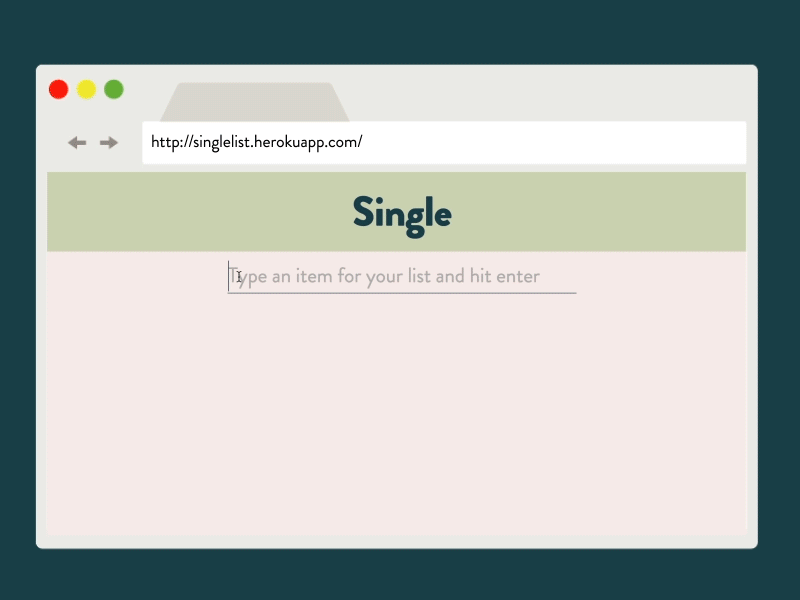

<div class="portfolio-image">
	<a href="images/single-mobile.png" data-lightbox="image-3" data-title="Single"></a>
</div>
<div class="portfolio-image">
	<a href="images/flow-single.png" data-lightbox="image-1" data-title="Single"></a>
</div>
<div class="portfolio-image">
	<a href="images/single-video.gif" data-lightbox="image-2" data-title="Single"></a>
</div>
>
